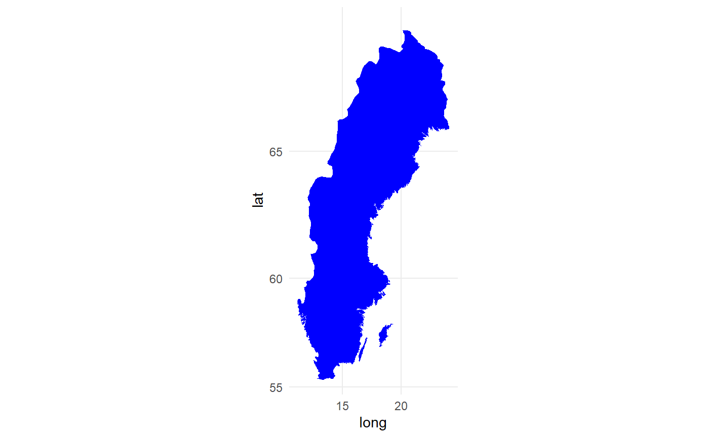

swe.RdA dataset used to create elegant figures of Sweden with ggplot2.
swe
A data frame with 6564 rows and 5 variables. This is a filtered version of swe_allpoints where all points with piece equal to "6" or larger are removed (small islands) and only every thirtieth point being used (see examples).
longitude, numeric
latitude, numeric
specifies the order for each point, integer
"1" if point belongs to mainland, "2" if point belongs to Gotland (largest island in Sweden), "3" if point belongs to Öland, "4" if point belongs to Orust or Tjörn, "5" if point belongs to Fårö
Each region in the map is a polygon where "1.1" if point belongs to mainland, "1.2" if point belongs to Gotland (largest island in Sweden), "1.3" if point belongs to Öland, "1.4" if point belongs to Orust or Tjörn, "1.5" if point belongs to Fårö
# How the data set was created library(dplyr) library(ggplot2) swe_example <- dplyr::filter(swe_allpoints, piece %in% c("1", "2", "3", "4", "5")) %>% dplyr::filter(order %% 30 == 1) %>% droplevels() # Example on how to make map of Sweden using ggplot2. # Note that coord_map() is essential for the map to be in actual scale. ggplot(data = swe, aes(x=long, y=lat, group = group)) + geom_polygon(color = "transparent", fill = "blue") + coord_map() + theme_minimal()